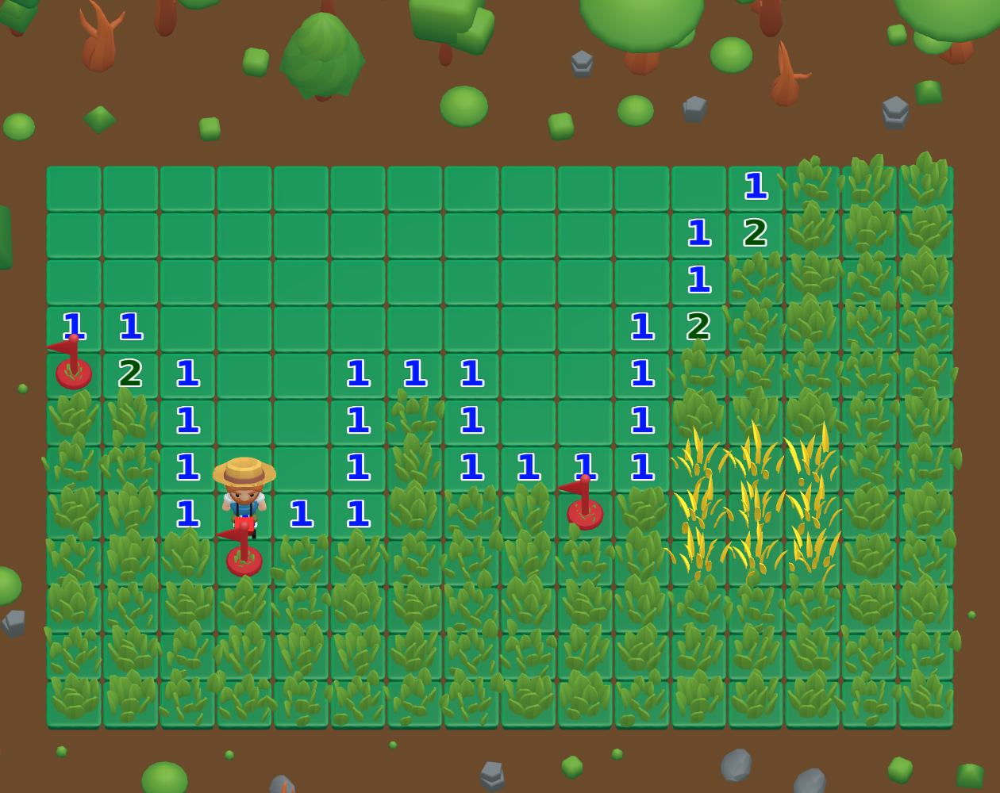
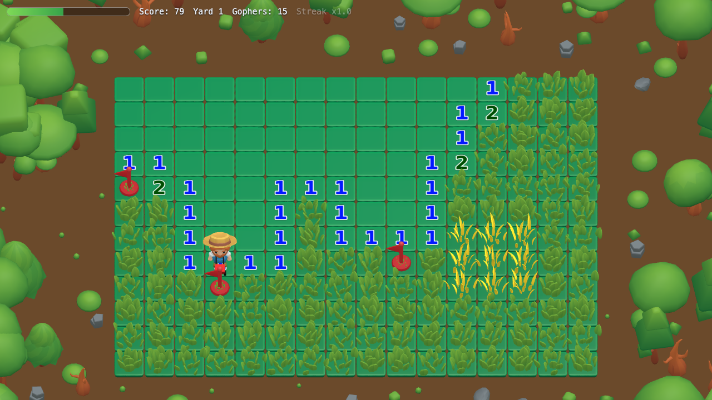
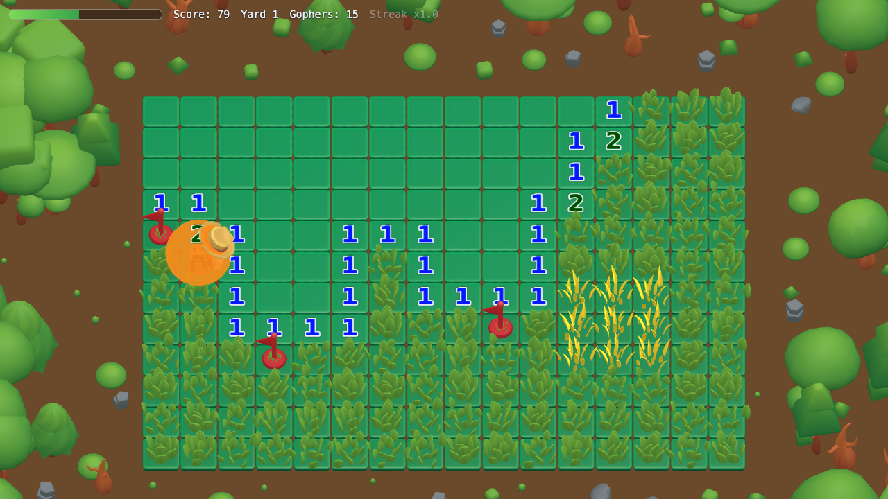
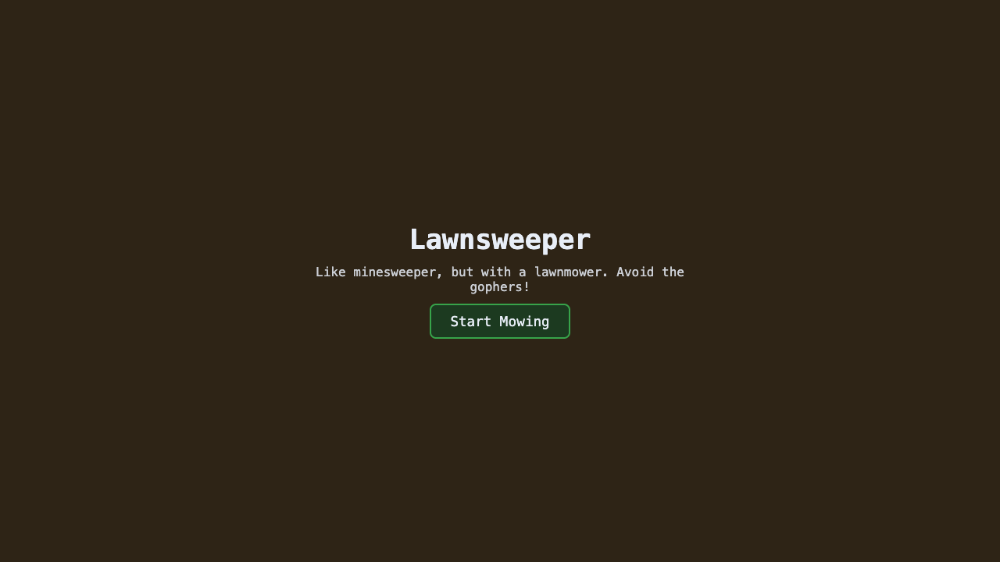

Minesweeper With a Lawnmower
Like minesweeper, but with a lawnmower. Avoid the gophers!

Numbers Don’t Lie
Every tile you mow reveals a number telling you how many gophers are hiding in the eight tiles around it. Flag the ones you're sure about with spacebar and mow around the rest.

Watch Your Step
Mow into an unflagged hole and a gopher sends you packing. Find the golden patch before it relocates for a burst-clear of tiles and a big score bonus.


Like minesweeper, but with a lawnmower
Sweep every tile to clear the yard
Flag suspected holes before you mow near them
An unflagged hole ends your run fast
Start the engine and see how many yards you can clear, free in your browser.